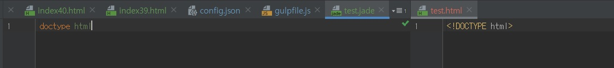
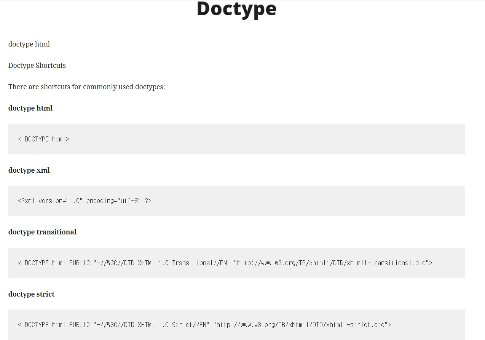
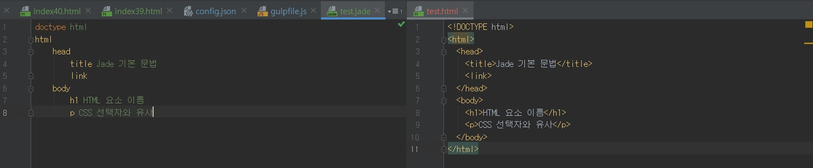
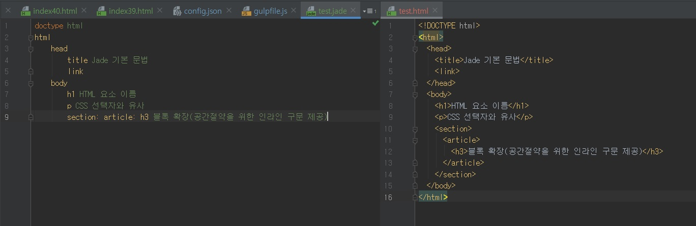
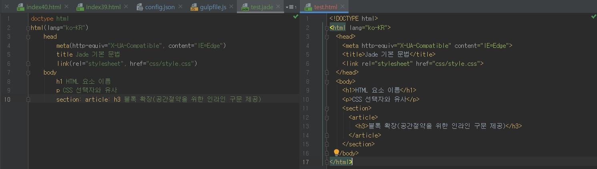
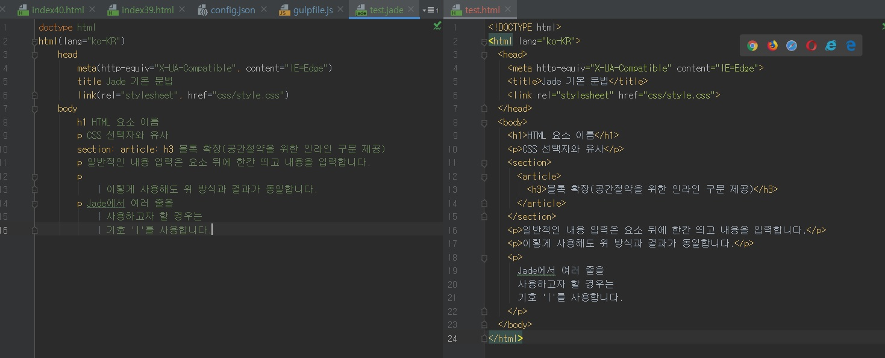
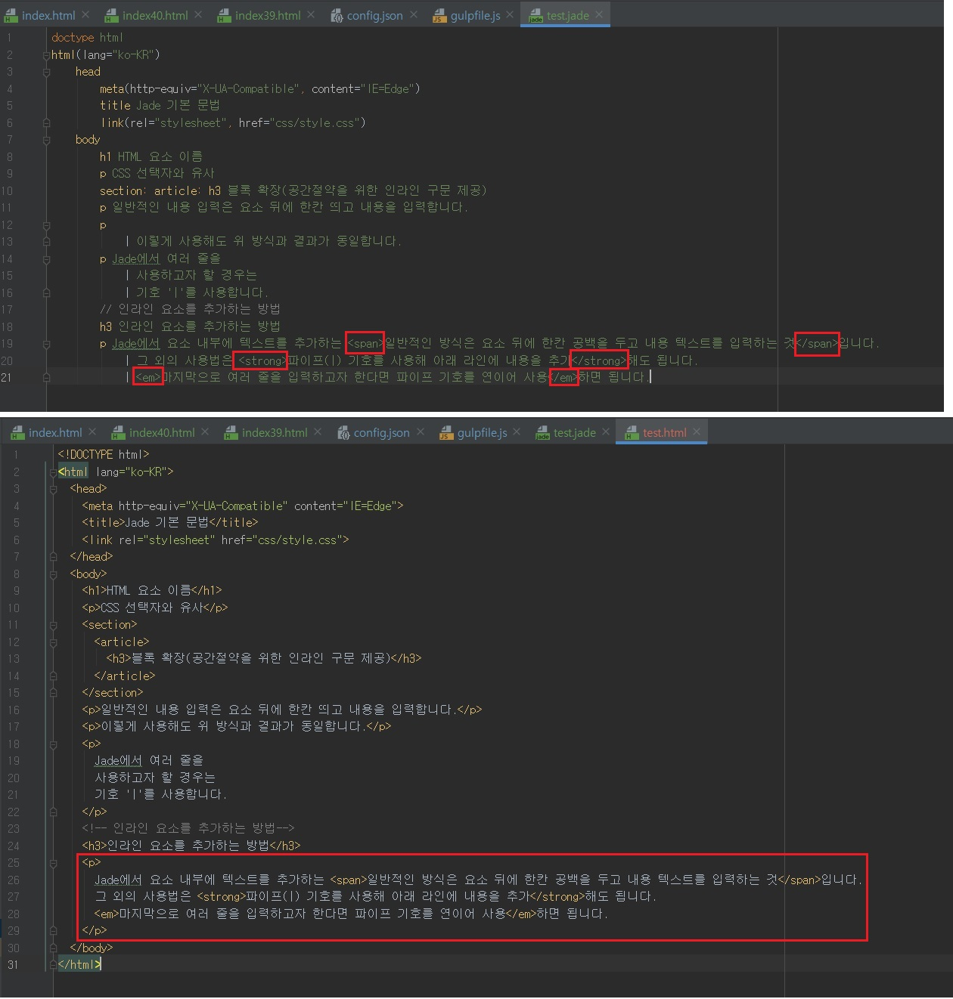
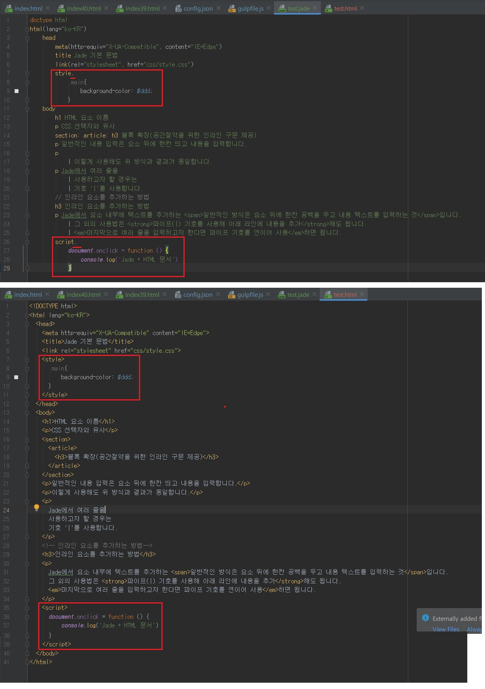
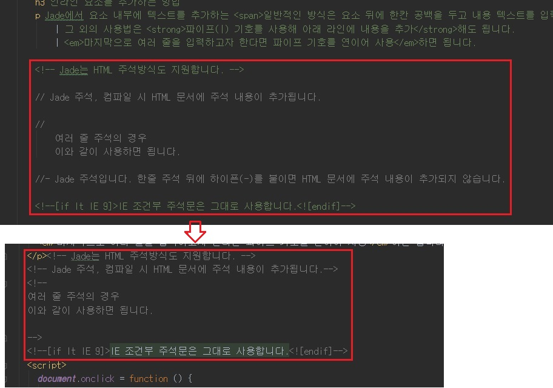

Jade 속기 마크업(Shorthand Markup)
- 문서 유형 정의(DTD) 코드 알아보기
-
문서 유형 정의(DTD, Document Type Definition)는 HTML 표준 문서를 만드는 출발점입니다.
Jade 문서를 만들려면 문서 유형 정의 방법부터 알아야 합니다.
먼저 HTML5 표준 문서 DTD는 Jade 문서에 doctype html을 입력하고,
HTML 문서로 컴파일되면 <!DOCTYPE html> 코드로 변환합니다.

HTML5 표준문서 외에 다른 표준 문서(XHTML, XML) DTD는 http://jade-lang.com/reference/doctype을 참고합니다.
굵은 글씨로 되어있는 텍스트는 Jade 문서에 사용합니다.

- HTML 요소 사용하기
-
CSS 선택자를 사용하듯 HTML 요소(Elements) 이름을 입력하면, HTML 요소로 컴파일됩니다.
Jade 코드를 입력할 때는 들여쓰기(Indent)에 주의해야 합니다.
아래처럼 들여쓰기를 잘 지켜야 HTML을 제대로 구조화할 수 있습니다.
HTML 요소에 내용을 추가하려면 한 칸 띄우고 텍스트를 입력합니다.

들여쓰기를 지켜 입력하면 Jade 문법의 특성상 공간을 많이 차지합니다.
공간을 효율적으로 관리하려면, 다음처럼 확장하려는 요소 뒤에 콜론(:)을 붙여 사용합니다.
이를 블록확장 또는 인라인 중첩 구문이라고 합니다.

- HTML 속성 사용하기
-
Jade에서 HTML 요소의 속성(Attributes)을 추가할 때는 다음처럼 속성 값을 괄호로 묶습니다.
속성이 두 개 이상이면 콤마(,)로 구분한 후 속성을 추가합니다.
콤마가 없어도 변환 가능합니다.

- 내용(Contents) 입력하기
-
보통 Jade에서는 요소 내부에 텍스트를 추가할 때 요소 뒤에 한 칸 띄우고 텍스트를 입력합니다.
파이프(|) 기호를 사용하여 입력하는 방법도 있습니다.
다음처럼 파이프 기호를 사용하여 한 줄 아래쪽에 내용을 추가합니다.
마지막으로 여러 줄을 입력할 때는 파이프 기호를 연속해서 사용합니다.
다음을 참고합니다.

- 블록 요소 안에서 인라인 요소 사용하기
-
HTML 블록 요소 안에 인라인 요소(inline elements)를 추가할 때는 HTML 기본 방식인 태그(<>)를 사용합니다.
다음을 참고합니다.

- script, style 코드 블록 사용하기
-
HTML 문서에 삽입되는 스타일이나 스크립트 코드를 사용하려면 style, script 요소를 사용해야합니다.
다만, 지금까지 다룬 요소와는 달리 HTML이 아닌 CSS, 자바스크립트 코드를 사용합니다.
그러므로 style, script 요소 뒤에 마침표(.) 기호를 붙입니다.
다음을 참고합니다.

- 주석 사용하기
-
Jade 문서에서 주석(Comments)을 사용하는 방법은 HTML보다 다양합니다.
HTML 주석을 지원하기는 하지만, 자바스크립트 한 줄 주석(//)과 동일한 주석이 더 많이 사용됩니다.
여러 줄 주석은 다음처럼 주석 내용을 한 줄 아래쪽에 들여쓰기하여 작성합니다.
Jade 문서에서만 확인이 가능하고 HTML 문서에서는 보이지 않는 주석 //- 도 있습니다.
마지막으로 Internet Explorer에서만 해석 가능한 조건부 주석문(Conditional Comments)을 기존과 동일한 방식으로 작성합니다.

- HTML 코드를 Jade 코드로 바꿀 수도 있나요?
-
html2jade 모듈(https://github.com/donpark/html2jade)을 사용하여 변경 가능합니다.
NPM으로 모듈을 설치하여 사용할 수 있고, 명령어로 HTML 문서를 Jade 포맷으로 변경할 수 있습니다.
CLI 환경에 익숙하지 않다면 온라인 서비스(http://html2jade.org)를 참고하여 변경할 수도 있습니다.